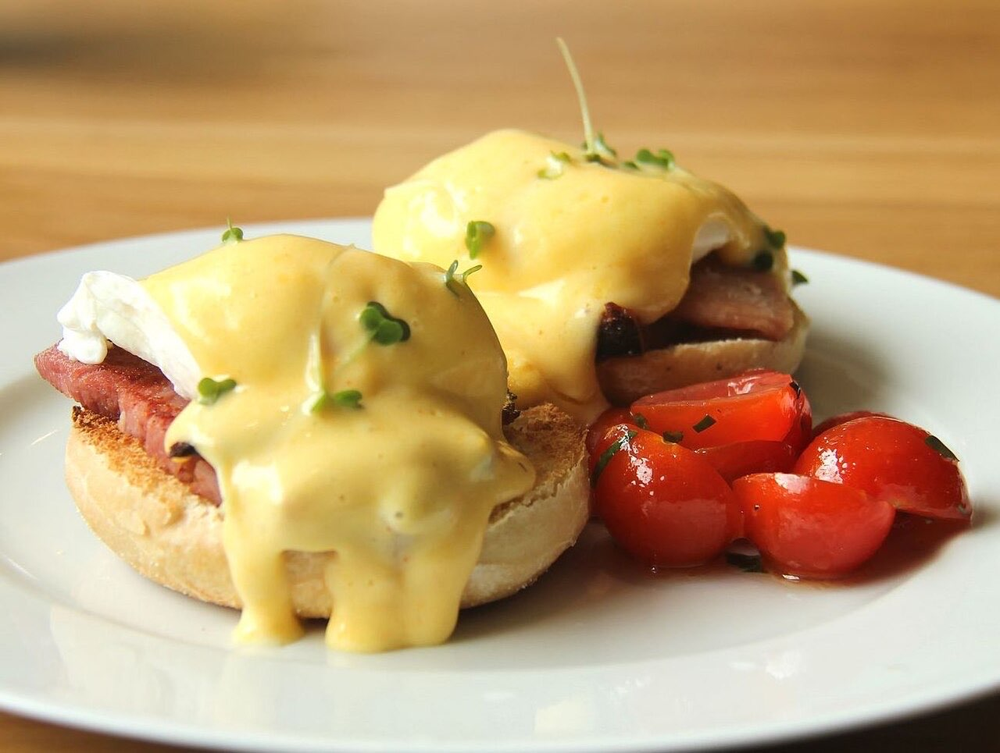
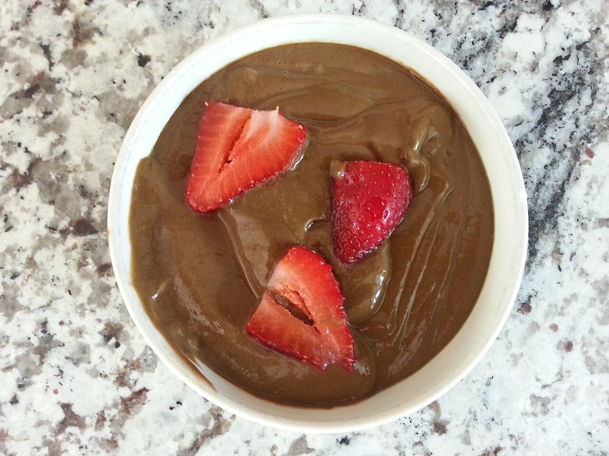

Fotografias ilustrativas — no site final usamos as vossas.
Um pequeno-almoço tardio ou um almoço leve com amigos.
Café e mesa partilhada para uma manhã sem pressas.
Rua da Unidade Vimaranense. Veja como chegar.
O Belo - Brunch & Co é um espaço de brunch na Rua da Unidade Vimaranense, na zona da Costa, em Guimarães. Um pequeno-almoço tardio ou um almoço leve, sem olhar ao relógio.


Fotografias ilustrativas — no site final usamos as vossas.
Pedido de reserva
Escolha o dia e a hora — o pedido chega por WhatsApp e confirmamos logo.
↑ Assim chegaria a mensagem ao vosso WhatsApp. (Nesta demonstração nada é enviado.)
Onde estamos
Proposta para Belo - Brunch & Co
Esta página foi feita de propósito para Belo - Brunch & Co por João Machado, programador web aqui de Guimarães. Inclui:
Eu trato do alojamento e da manutenção. Sem compromisso.